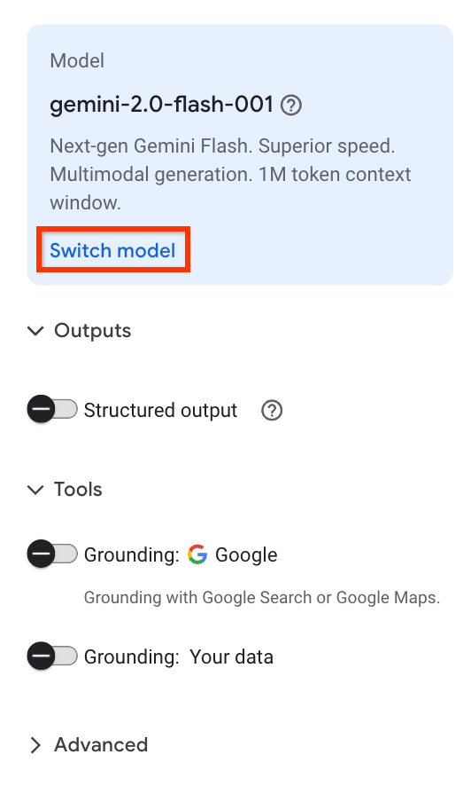

Quickstart: Send text prompts to Gemini using Vertex AI Studio¶
You can use Vertex AI Studio to design, test, and manage prompts for Google's Gemini large language models (LLMs). Vertex AI Studio also supports certain third-party models that are offered on Vertex AI as models as a service (MaaS), such as Anthropic's Claude models and Meta's Llama models.
By providing a unified UI, Vertex AI Studio makes it easy to experiment with different models and prompts to discover the best combination for your use case before integrating it into your application.
Note
On your initial use of third-party models, Vertex AI prompts you to accept the third-party's terms and conditions. You must do this once for each third-party provider to start using their models.
In this quickstart, you use sample prompts from the generative AI prompt gallery to test the Gemini model and view the code required to replicate the prompt in your own applications.
‚öôÔ∏è Before you begin¶
This quickstart requires you to complete the following steps to set up a Google Cloud project and enable the Vertex AI API.
-
Sign in to your Google Cloud account. If you're new to Google Cloud, create an account to evaluate how our products perform in real-world scenarios. New customers also get $300 in free credits to run, test, and deploy workloads.
-
In the Google Cloud console, on the project selector page, select or create a Google Cloud project.
Note: If you don't plan to keep the resources that you create in this procedure, create a project instead of selecting an existing project. After you finish these steps, you can delete the project, removing all resources associated with the project.
-
Make sure that billing is enabled for your Google Cloud project.
-
Enable the Vertex AI API.
üìö About sample prompts in Vertex AI Studio¶
A prompt is a natural language request submitted to a language model that generates a response. Prompts can contain questions, instructions, contextual information, few-shot examples, and partial input for the model to complete. After the model receives a prompt, depending on the type of model used, it can generate text, embeddings, code, images, videos, music, and more.
The sample prompts in the Vertex AI Studio prompt gallery are pre-designed to help demonstrate model capabilities. Each prompt is preconfigured with specified model and parameter values so you can open the sample prompt and click Submit to generate a response.
‚öôÔ∏è Test a summarization prompt¶
Send a summarization text prompt to the Vertex AI Gemini API. A summarization task extracts the most important information from text. You can provide information in the prompt to help the model create a summary, or ask the model to create a summary on its own.
Step 1: Go to the Prompt Gallery
Go to the Prompt gallery page from the Vertex AI section in the Google Cloud console.
Step 2: Select the summarization task
In the Tasks drop-down menu, select Summarize.
Step 3: Open the sample prompt
Open the Audio summarization card. This sample prompt includes an audio file and requests a summary of the file contents in a bulleted list.
Step 4: Review the model settings
In the settings panel, notice that the model's default value is set to Gemini-2.0-flash-001. You can choose a different Gemini model by clicking Switch model.

Step 5: Submit the prompt
Click Submit to generate the summary. The output is displayed in the response.
Step 6: View the code
To view the Vertex AI API code used to generate the transcript summary, click Build with code > Get code.
In the Get code panel, you can choose your preferred language to get the sample code for the prompt, or you can open the Python code in a Colab Enterprise notebook.
‚öôÔ∏è Test a code generation prompt¶
Send a code generation prompt to the Vertex AI Gemini API. A code generation task generates code using a natural language description.
Step 1: Go to the Prompt Gallery
Go to the Prompt gallery page from the Vertex AI section in the Google Cloud console.
Step 2: Select the code generation task
In the Tasks drop-down menu, select Code.
Step 3: Open the sample prompt
Open the Generate code from comments card. This sample prompt includes a system instruction that tells the model how to respond and some incomplete Java methods.

Step 4: Review the model settings
In the settings panel, notice that the model's default value is set to Gemini-2.0-flash-001. You can choose a different Gemini model by clicking Switch model.
Step 5: Submit the prompt
To complete each method by generating code in the areas marked <WRITE CODE HERE>, click Submit. The output is displayed in the response.
Step 6: View the code
To view the Vertex AI API code used to generate the code, click Build with code > Get code.
In the Get code panel, you can choose your preferred language to get the sample code for the prompt, or you can open the Python code in a Colab Enterprise notebook.
üìö Related Questions¶
What do I need to do before I can start using Vertex AI Studio to test prompts?
Before you can use Vertex AI Studio, you must set up your Google Cloud environment by completing these four steps: 1. Sign in to your Google Cloud account. 2. Select or create a Google Cloud project. 3. Make sure billing is enabled for your project. 4. Enable the Vertex AI API.
I've created a prompt in the Vertex AI Studio UI. How can I get the API code to use it in my application?
After you submit a prompt and receive a response in Vertex AI Studio, click Build with code and then select Get code. A panel will appear where you can choose your preferred language to get the sample code for the prompt you just ran. You can also open the Python code directly in a Colab Enterprise notebook.
Can I use models other than Google's Gemini in Vertex AI Studio?
Yes, Vertex AI Studio supports certain third-party models that are offered as a service, such as Anthropic's Claude models and Meta's Llama models. Note that on your first use of a third-party model, you will be prompted to accept that provider's terms and conditions.
Where can I find pre-built examples to test common tasks like summarization?
Vertex AI Studio includes a Prompt gallery with predesigned sample prompts for various tasks. To find a summarization example, navigate to the Prompt gallery, select Summarize from the Tasks drop-down menu, and then open a sample prompt like Audio summarization.
The sample prompts use a default model like Gemini-2.0-flash-001. Can I switch to a different model?
Yes. In the settings panel of the prompt interface, you can see the default model selection. To change it, simply click Switch model and choose a different Gemini model from the available options.
üîó What's next¶
- See an introduction to prompt design.
- Learn about designing multimodal prompts and chat prompts.